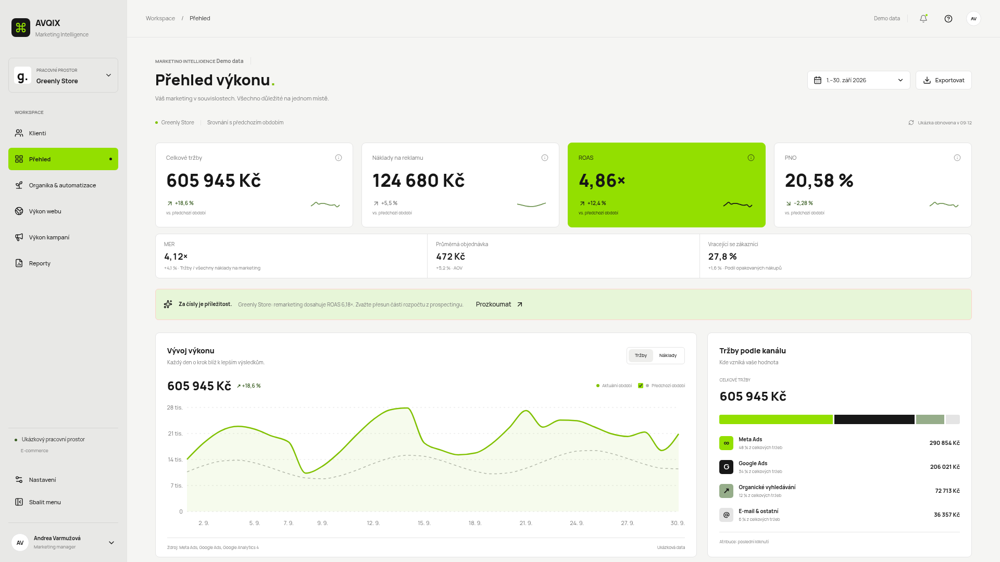

AVQIX je přehledový nástroj pro marketingové řízení. Na jednom místě ukazuje, jak si vedou reklamy, web, organika a e-maily u jednotlivých klientů, a převádí čísla do srozumitelných doporučení: co zlepšit, komu to předat a jaký může být přínos. Hlavní novinka: z cílů klienta vyrobí rady, u které kampaně v jakém kanálu co udělat.

| Oblast | Co umí | Stav |
|---|---|---|
| Cíle a rady | Obchodní cíl, marketingový cíl a čísla (KPI) s cílovou hodnotou, obdobím a kanálem. Porovnání skutečnost × cíl po kanálech a kampaních. Pravidlové rady „u kampaně X udělej Y, protože KPI Z je pod cílem“ s prioritou, jistotou a komu předat. Tlačítko Předat vytvoří úkol. Cíle jdou přenést do ppc.md Fachmana a zpět. | pracuje s vašimi daty |
| Vlastní klienti | Přidání klienta, nebo načtení klientů ze složky AGENTURA/klienti (ID účtů a cíle z ppc.md). Klient začíná prázdný. Ukládá se jen v prohlížeči. Má vlastní Přehled a Výkon kampaní: čísla, graf vývoje po dnech, kanály, tabulka, export CSV. | funguje |
| Fachman (lokální most) | Tlačítko Aktualizovat z Fachmana stáhne kampaně z Google Ads a Meta Ads (jen čtení) a načte je. Funguje jen při lokálním spuštění, na veřejném webu je vypnuté. | zdarma, lokálně |
| E-mailing a report pro klienta | Import CSV z e-mailového nástroje, cíle pro otevřenost, prokliky a odhlášení. Report pro klienta jako jeden soubor jen k nahlédnutí. | funguje |
| Úkoly týmu | Úkoly vzniklé tlačítkem Předat: kdo je řeší, stav, export CSV. Ukládají se jen v prohlížeči. | funguje |
| Přehled | Tržby, náklady, ROAS, PNO, MER, průměrná objednávka a vracející se zákazníci, vždy proti předchozímu období. | demo data |
| Klienti a obchodní modely | Čtyři ukázkoví klienti. Wording, KPI i doporučení se mění podle modelu. | demo data |
| Kampaně, web, organika | Tabulky s hledáním, řazením, filtry, výběrem sloupců a exportem CSV, grafy a náhledy kreativ. | demo data |
| Reporty | Report pro firmu (všechna doporučení, priority, komu předat) a report pro klienta. Export CSV. | demo data |
| Search Console | Import CSV v češtině i angličtině. Tabulky dotazů a stránek. Příležitosti: hodně zobrazení s nízkým CTR, pozice 8 až 20 a poklesy proti předchozímu období. Pravidlová doporučení s prioritou, jistotou a příklady. | pracuje s vašimi CSV |
| Datové zdroje | Karty konektorů jako zásuvné moduly. U každého import CSV s kontrolou sloupců (co se našlo, co chybí). | kontrola sloupců |
| AI (Claude, GPT) | Volitelné a vypnuté. Po zapnutí ukáže náhled souhrnných čísel, která by se poslala (žádné dotazy, adresy ani jména klientů). | jen náhled, nic se neodesílá |
Přímé připojení účtů v appce zatím neexistuje. Google Ads a Meta Ads se čtou přes Fachmana na vašem počítači, ostatní zdroje přes CSV. Tabulka ukazuje, co funguje už teď a co je potřeba pro skutečné napojení.
| Zdroj | Co funguje dnes | Pro skutečné napojení bude potřeba |
|---|---|---|
| Google Search Console | Import CSV, analýza příležitostí a doporučení | Přihlášení Google účtem s přístupem k webu |
| Meta Ads | Kampaně přes Fachmana (tlačítko nebo soubory z data-most), využité v Cílech a radách | Pro živé napojení bez Fachmana: Meta Marketing API a přihlášení do appky |
| Google Ads | Kampaně přes Fachmana (tlačítko nebo soubory z data-most), využité v Cílech a radách | Pro živé napojení bez Fachmana: developer token a přihlášení do appky |
| Google Analytics 4 | Kontrola sloupců a náhled CSV | Přístup k vlastnosti GA4 |
| YouTube | Kontrola sloupců a náhled CSV | Přístup ke kanálu (YouTube Analytics API) |
| E-mailing | Kontrola sloupců a náhled CSV | API klíč použitého nástroje |
| AI (Claude, GPT) | Vypínač a náhled dat k odeslání | Vlastní API klíč, uložený mimo prohlížeč |
Potřebujete jen nainstalovaný Node.js. Vše ostatní se stáhne samo.
gh repo clone varmuzovaa-source/avqix-intelligence-studio && cd avqix-intelligence-studio && ./start.sh
Kód už máte stažený? Na Macu stačí dvakrát kliknout na Spustit-AVQIX.command, nebo v Terminálu spustit ./start.sh. Aplikace se otevře na http://localhost:5173. Pak přidejte klienta, zadejte cíle a na stránce Cíle a rady stáhněte čísla. Podrobně v postupu krok za krokem.
Živé demo: avqix-intelligence-studio.vercel.app · Kód: github.com/varmuzovaa-source/avqix-intelligence-studio